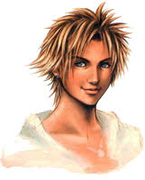
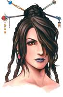
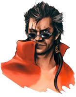
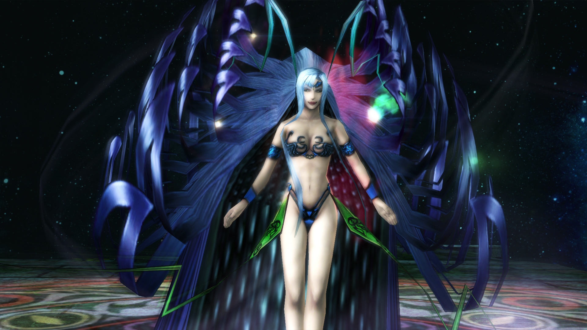

Final Fantasy X
The story of Final Fantasy X is told by Tidus, a sports star from the futuristic metropolis called Zanarkand. During a match, Tidus gets swept up to another world and joins Summoner Yuna and her friends on her journey to save the world of Spira from a rampaging monster known as Sin. Making their way toward the mythical Zanarkand while running into the corrupt undercurrent of Spira's society, Tidus holds onto the hope he will one day find his way back home.
- Tidus
- Lulu
- Auron
- Yuna
Welcome to zanarkand
Learn what u need to know
Zanarkand is a former metropolis at Spira's northernmost edge in Final Fantasy X and Final Fantasy X-2. In the English localization, Zanarkand is pronounced [ˈzæ.nɚ.kənd]. In modern days, it is an ancient holy site.
- There are, in fact, two Zanarkands
- The original Zanarkand was a city state whose people wished to enhance their lives using a mix of magic imbued within machina.
- During the war Yu Yevon, the leader of Zanarkand and the most powerful summoner in Spira, used this might to fight off the armies of Bevelle.
- A thousand years later the Zanarkand Ruins is the final destination of the summoners' pilgrimage to defeat Sin.
"A city dead for a thousand years. A city I had to see with my own eyes. The end of Yuna's journey. The last chapter in my story."
~Tidus
Tutorial
Tidus
17 yo
Blitzball player; Guardian
Lulu
22 yo
Guardian
Auron
35 yo
Warrior monk; Guardian
Yuna
17 yo
Summoner; Sphere hunter
Same & other characters
Tidus & Yuna
Shiva
Bahamut
Lady Yunalesca
"It is better for you to die in hope than to live in despair. Let me be your liberator."
Yunalesca is frank and to-the-point. While she can be kind, she can also be quite merciless, as she cares only about upholding the teachings of Yevon, not hesitant to strike down those who dare to question them. She is not open to the ideas of others, viewing Spira as doomed without the service that she provides.
Explanations
Yunalesca has three forms, each having a separate HP pool. Whenever a form is defeated, Yunalesca will transform into her next form. Despite being implied by her Sensor description, she does not take extra damage from Holy. Hellfire, Thor's Hammer, and Delta Attack have alternate animations against Yunalesca, though the latter can't be seen under normal circumstances.
